TD2
Intelligence artificielle, articles et problématique
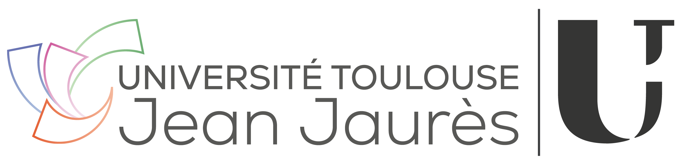
![]()
Année universitaire 2026-2027 | Enseignements pensés par Aurélie Pistono et Yoan Segura
Organisation
Le mur des questions
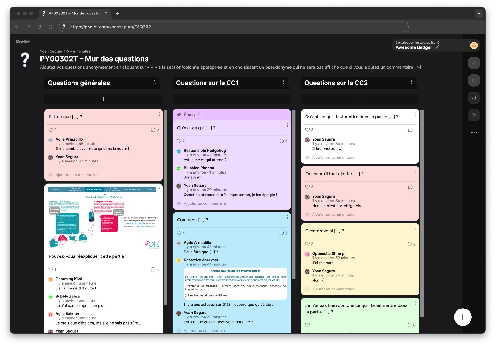
Objectifs par séance
Pour la séance 2
Lire les articles à l’aide (ou non) de la fiche de
lecture et avancer sur le rapport de synthèses
|
Pour la séance 4
Avancer sur le rapport de recherche (partie
méthode) et terminer le recueil des données
|
|
|
|
|
Pour la semaine suivante
Terminer le rapport de recherche (parties
discussion-conclusion, bibliographie,
résumé, table des matières, annexes)
|
|
Pour la séance 3
Terminer le rapport de synthèses et avancer sur
le rapport de recherche (mise en forme du
document, page de garde, partie introduction)
et l’expérience (apporter le matériel en plus
nécessaire pour construire l’expérience)
|
Pour la séance 5
Avancer sur le rapport de recherche
(partie résultats)
Intelligence Artificielle
Rôle de l’Intelligence Artificielle (IA) dans les apprentissages
Ouvrons le débat !
Utilisez-vous fréquemment des IA commeChatGPT ?
What do you think?
Percevez-vous parfois deslimites et/ou des désavantages à cette utilisation ?
Rôle de l’Intelligence Artificielle (IA) dans les apprentissages
Ouvrons le débat !
Avec l’IA, la question n’est pas simplement “comment évaluer les étudiantes/étudiants ?” ou “comment empêcher son utilisation ?”
Qu’est-ce que ChatGPT ?
Un modèle de langage : il prédit le mot suivant en se basant sur d’énormes bases de textes
Il n’a pas de compréhension du monde, il fait fréquemment des erreurs et est sujet à des hallucinations
↳ Enjeu n°1: ne pas le prendre pour plus intelligent qu’il ne l’est réellementChaque requête consomme de l’énergie
GPT-3 : jusqu’à 0,1 kWh par requête ≈ une charge de smartphone
Refroidissement des serveurs : centaines de milliers de litres d’eau
↳ Enjeu n°2 : ce n’est pas gratuit pour la planète
Rôle de l’Intelligence Artificielle (IA) dans les apprentissages
Ouvrons le débat !
Avec l’IA, la question n’est pas simplement “comment évaluer les étudiantes/étudiants ?” ou “comment empêcher son utilisation ?”
- Du point de vue de l’éthique
Plagiat passif : vous êtes responsables de ce que vous “empruntez” à ChatGP
Paramètres de confidentialité à questionner
Risques de contenus discriminants ou biaisés selon ce qui “nourrit” majoritairement l’IA
↳ Enjeu n°3 : être au clair sur les questions éthiques
Rôle de l’Intelligence Artificielle (IA) dans les apprentissages
Ouvrons le débat !
Pour autant, les IA sont des outils très utiles si elles sont bien utilisées
Il est donc important de savoir optimiser leur utilisation
- Pourquoi utiliser ChatGPT ? (non exhaustif)
✓ Générer des QCM ou des quiz pour s’auto-évaluer et s’entraîner
✓ Reformuler des concepts
✗ Ne jamais confier une tâche d’analyse ou d’interprétation statistique sans relecture critique
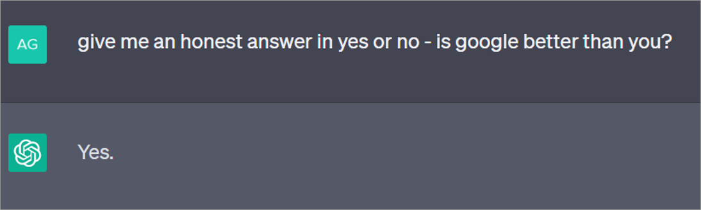
Rôle de l’Intelligence Artificielle (IA) dans les apprentissages
Ouvrons le débat !
Pour autant, les IA sont des outils très utiles si elles sont bien utilisées
Il est donc important de savoir optimiser leur utilisation
Comment utiliser ChatGPT ? (non exhaustif)
1. Apprendre à poser les “bonnes” questions: ”prompts“
↳ Faire preuve de précision dans les termes et les attentes
Exemple :
✗”Qu’est-ce que la mémoire de travail ?“
✓”Explique-moi le modèle de la mémoire de travail de Baddeley pour un niveau de licence de psychologie ; donne un exemple expérimental ainsi que les références sur lesquelles tu t’es appuyé.”
Rôle de l’Intelligence Artificielle (IA) dans les apprentissages
Ouvrons le débat !
Pour autant, les IA sont des outils très utiles si elles sont bien utilisées
Il est donc important de savoir optimiser leur utilisation
Comment utiliser ChatGPT ? (non exhaustif)
1. Apprendre à poser les “bonnes” questions:“prompts”
2. Poser plusieurs questions et comparer les réponses, notamment avec les cours/formations/autre
↳ Ne jamais se contenter d’une réponse de ChatGPT, mais recouper les informations
Rôle de l’Intelligence Artificielle (IA) dans les apprentissages
Ouvrons le débat !
Pour autant, les IA sont des outils très utiles si elles sont bien utilisées
Il est donc important de savoir optimiser leur utilisation
Comment utiliser ChatGPT ? (non exhaustif)
1. Apprendre à poser les “bonnes” questions: ”prompts”
2. Poser plusieurs questions et comparer les réponses, notamment avec les cours/formations/autre
3. Demander et vérifier les sources sur lesquelles il s’appuie
↳ Lui demander de fournir les références et vérifier qu’elles existent
Rôle de l’Intelligence Artificielle (IA) dans les apprentissages
Ouvrons le débat !
Pour autant, les IA sont des outils très utiles si elles sont bien utilisées
Il est donc important de savoir optimiser leur utilisation
3 catégories d’utilisation inappropriée de l’IA dans toute production
1. Générer un produit et le présenter comme son propre travail ou sa propre idée sans attribuer à l’IA sa “parentalité”
2. Générer une sortie, la paraphraser, puis présenter la sortie comme son propre travail ou sa propre idée sans attribuer à l’IA sa “parentalité”
3. Traiter une source originale non créée par soi-même pour la plagier sans attribuer à l’IA sa “parentalité”
Exemple :
Utiliser un outil de paraphrase d’IA pour déguiser le travail original d’une autre personne ou le résultat d’un autre outil d’IA, puis présenter le résultat final comme son propre travail ou sa propre idée
Rôle de l’Intelligence Artificielle (IA) dans les apprentissages
Vers une charte
ChatGPT est un outil utile s’il est bien utilisé qui peut vous aider à apprendre, mais pas apprendre à votre place
Une bonne utilisation a un coût (en termes de temps et d’efforts) parfois plus important que les gains
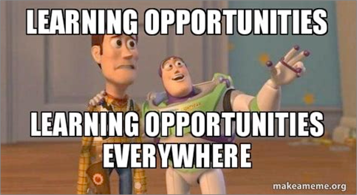
- Charte d’usage responsable (non exhaustive) :
Je me sers de ChatGPT pour réfléchir et non déléguer
Je reste actrice/acteur de mon apprentissage
Je vérifie toute information dans des sources (scientifiques) fiables
Je ne rends jamais un texte généré sans l’avoir compris, adapté et critiqué
Rôle de l’Intelligence Artificielle (IA) dans les apprentissages
Vers une charte
ChatGPT est un outil utile s’il est bien utilisé qui peut vous aider à apprendre, mais pas apprendre à votre place
Une bonne utilisation a un coût (en termes de temps et d’efforts) parfois plus important que les gains
- Penser à reconnaître son utilisation s’il y en a une dans le cadre d’une production (écrite, orale, autre)
↳ Faire une “Déclaration usage d’un outil d’IA” après la page de garde dans les travaux
↳ Penser à citer l’IA générative dans le texte et dans la bibliographie
Exemple :
“Le texte généré par ChatGPT […] (OpenAI, 2023).”
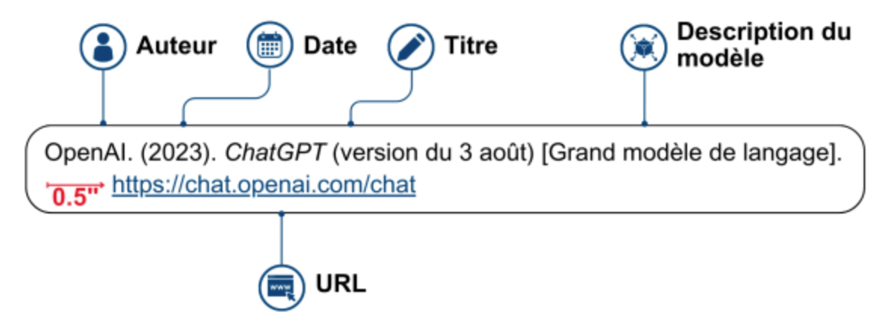
Rôle de l’Intelligence Artificielle (IA) dans les apprentissages
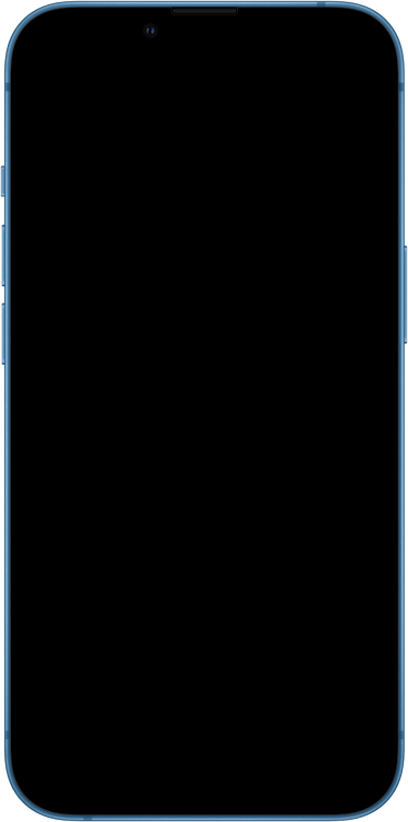
Démarche expérimentale
Schématisation
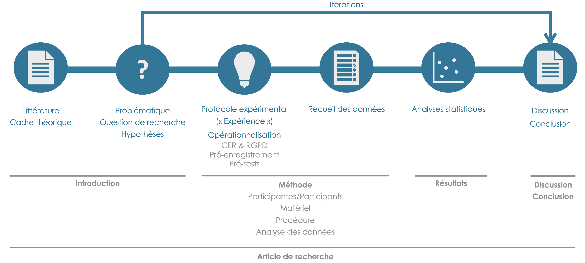
Corrélation & Causalité
Corrélation & Causalité
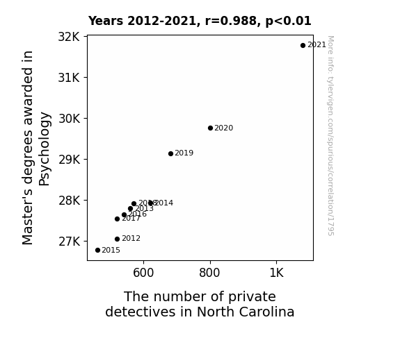
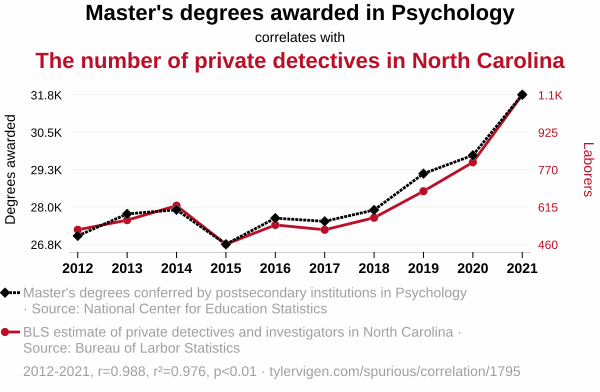
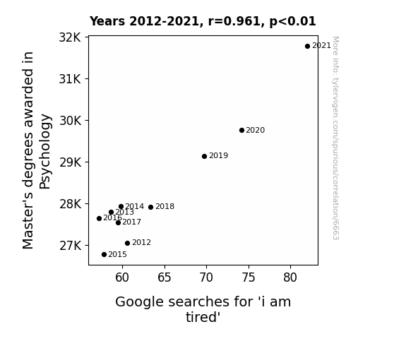
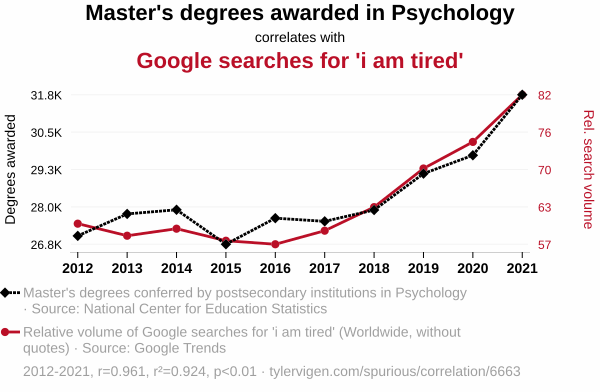
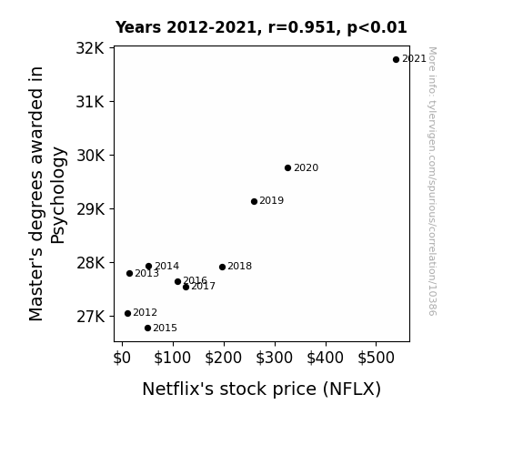
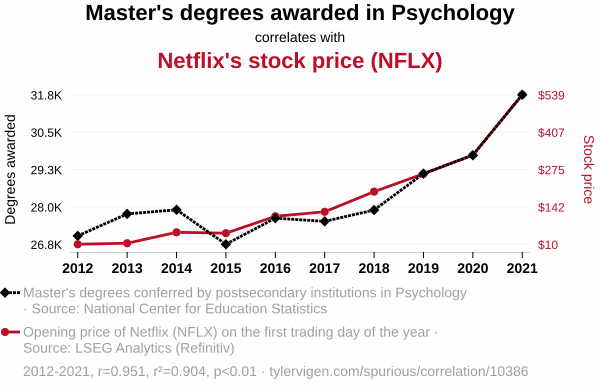
Clôture
Objectifs par séance
Pour la séance 2
Lire les articles à l’aide (ou non) de la fiche de
lecture et avancer sur le rapport de synthèses
|
Pour la séance 4
Avancer sur le rapport de recherche (partie
méthode) et terminer le recueil des données
|
|
|
|
|
Pour la semaine suivante
Terminer le rapport de recherche (parties
discussion-conclusion, bibliographie,
résumé, table des matières, annexes)
|
|
Pour la séance 3
Terminer le rapport de synthèses et avancer sur
le rapport de recherche (mise en forme du
document, page de garde, partie introduction)
et l’expérience (apporter le matériel en plus
nécessaire pour construire l’expérience)
|
Pour la séance 5
Avancer sur le rapport de recherche
(partie résultats)
Remerciements pour la construction de ces contenus de cours à
YOAN SEGURA
AURÉLIE PISTONO
MAGALI BRINGUIER
ZOÉ LACROUX
PY00302T - Démarche expérimentale